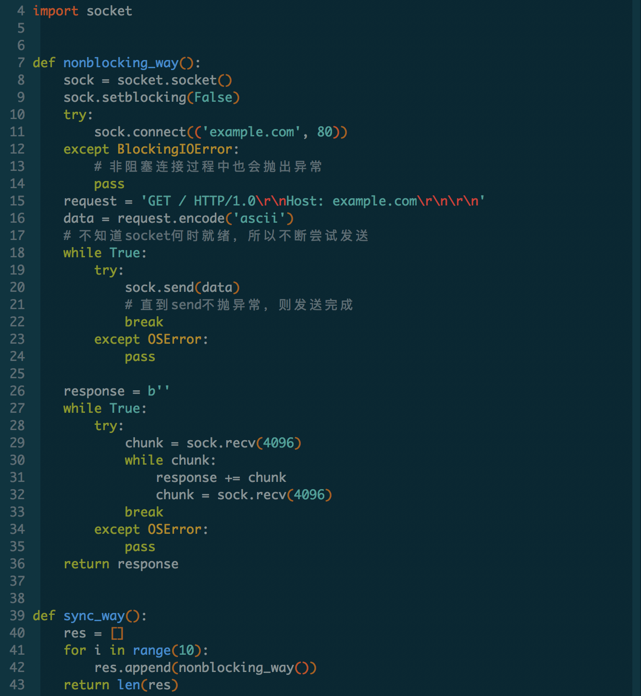
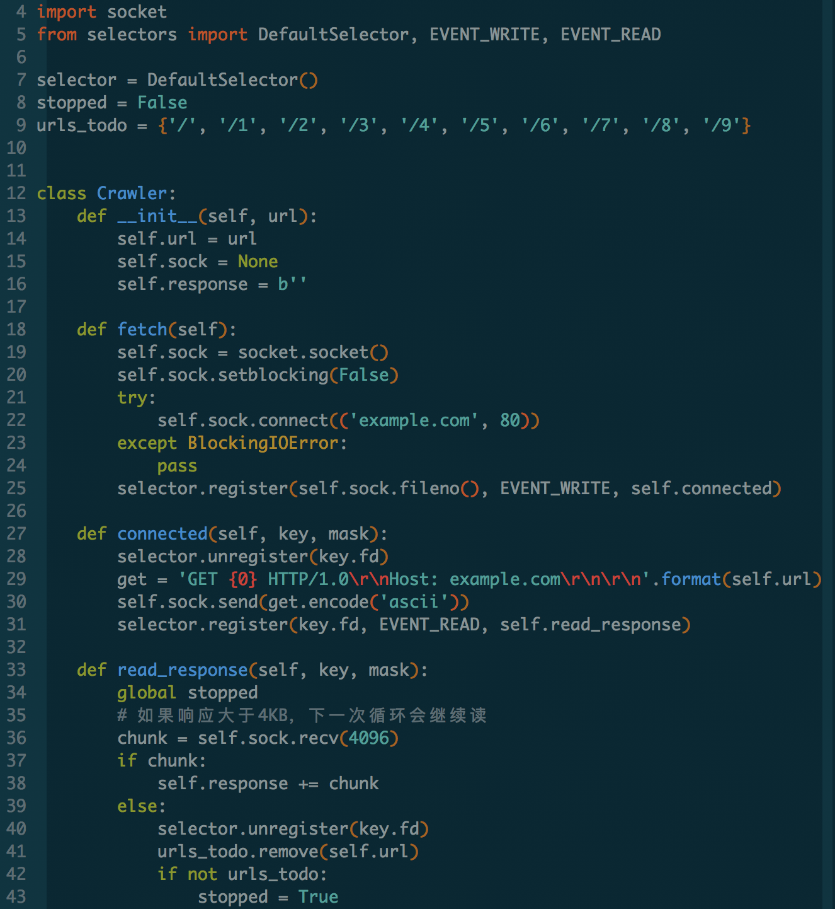

异步编程
Table of Contents
1 异步编程
- 内容安排：
+ 上篇
- 了解 异步编程及其紧密相关的概念，如阻塞/非阻塞、同步/异步、并发/并行等
- 理解 异步编程是什么，以及异步编程的困难之处
- 理解 为什么需要异步编程
- 熟悉 如何从同步阻塞发展到异步非阻塞的
- 掌握epoll + Callback + Event loop是如何工作的
- 掌握 Python 是如何逐步从回调到生成器再到原生协程以支持异步编程的
- 掌握 asyncio 的工作原理
+ 中篇
- 掌握 asyncio 标准库基本使用
- 掌握 asyncio 的事件循环
- 掌握 协程与任务如何使用与管理（如调度与取消调度）
- 掌握 同步原语的使用(Lock、Event、Condition、Queue)
- 掌握 asyncio 和多进程、多线程结合使用
+ 下篇
- 理解 GIL 对异步编程的影响
- 理解 asyncio 踩坑经验
- 理解 回调、协程、绿程(Green-Thread)、线程对比总结
- 掌握 多进程、多线程、协程各自的适用场景
- 了解 Gevent/libev、uvloop/libuv 与asyncio的区别和联系
- 掌握 Python异步编程的一些指导细则
2 上篇
2.1 什么是异步编程
2.1.1 阻塞
- 程序未得到所需计算资源时被挂起的状态。
- 程序在等待某个操作完成期间，自身无法继续干别的事情，则称该程序在该操作上是阻塞的。
- 常见的阻塞形式有：网络I/O阻塞、磁盘I/O阻塞、用户输入阻塞等。
2.1.2 非阻塞
- 程序在等待某操作过程中，自身不被阻塞，可以继续运行干别的事情，则称该程序在该操作上是非阻塞的。
- 非阻塞并不是在任何程序级别、任何情况下都可以存在的。
- 仅当程序封装的级别可以囊括独立的子程序单元时，它才可能存在非阻塞状态。
2.1.3 同步
- 不同程序单元为了完成某个任务，在执行过程中需靠某种通信方式以协调一致，称这些程序单元是同步执行的。
- 例如购物系统中更新商品库存，需要用“行锁”作为通信信号，让不同的更新请求强制排队顺序执行，那更新库存的操作是同步的。
- 同步意味着有序。
2.1.4 异步
- 为完成某个任务，不同程序单元之间过程中无需通信协调，也能完成任务的方式。
- 不相关的程序单元之间可以是异步的。
- 例如，爬虫下载网页。调度程序调用下载程序后，即可调度其他任务，而无需与该下载任务保持通信以协调行为。不同网页的下载、保存等操作都是无关的，也无需相互通知协调。这些异步操作的完成时刻并不确定。
- 简言之，异步意味着无序。
2.1.5 并发
- 并发描述的是程序的组织结构。指程序要被设计成多个可独立执行的子任务。
- 以利用有限的计算机资源使多个任务可以被实时或近实时执行为目的。
2.1.6 并行
- 并行描述的是程序的执行状态。指多个任务同时被执行。
- 以利用富余计算资源（多核CPU）加速完成多个任务为目的。
2.1.7 概念总结
- 并行是为了利用多核加速多任务完成的进度
- 并发是为了让独立的子任务都有机会被尽快执行，但不一定能加速整体进度
- 非阻塞是为了提高程序整体执行效率
- 异步是高效地组织非阻塞任务的方式
2.1.8 异步编程
以进程、线程、协程、函数/方法作为执行任务程序的基本单位，结合回调、事件循环、信号量等机制， 以提高程序整体执行效率和并发能力的编程方式。如果在某程序的运行时，能根据已经执行的指令准确判断 它接下来要进行哪个具体操作，那它是同步程序，反之则为异步程序。（无序与有序的区别） 同步/异步、阻塞/非阻塞并非水火不容，要看讨论的程序所处的封装级别。 例如购物程序在处理多个用户的浏览请求可以是异步的，而更新库存时必须是同步的。
2.1.9 异步之难
- 控制不住写的程序，因为其执行顺序不可预料，当下正要发生什么事件不可预料。在并行情况下更为复杂和艰难。
- 几乎所有的异步框架都将异步编程模型简化：一次只允许处理一个事件。故而有关异步的讨论几乎都集中在了单线程内。
- 如果某事件处理程序需要长时间执行，所有其他部分都会被阻塞。
- 所以，一旦采取异步编程，每个异步调用必须“足够小”，不能耗时太久。如何拆分异步任务成了难题。
- 程序下一步行为往往依赖上一步执行结果，如何知晓上次异步调用已完成并获取结果？
- 回调（Callback）成了必然选择。那又需要面临“回调地狱”的折磨。
- 同步代码改为异步代码，必然破坏代码结构。
- 解决问题的逻辑也要转变，不再是一条路走到黑，需要精心安排异步任务。
2.2 多进程与多线程的缺点
2.2.1 多进程
- 进程切换的开销
- 进程数量不能过多
2.2.2 多线程
- 一个Python进程中，只允许有一个线程处于运行状态
- GIL
- 多线程最主要的问题还是竞态条件
2.3 非阻塞方式

2.4 非阻塞改进
2.4.1 epoll
- select模块：os将I/O状态的变化都封装成了事件，如可读事件、可写事件。并且提供了专门的系统模块让应用程序可以接收事件通知。
- 应用程序通过select注册文件描述符和回调函数，当文件描述符的状态发生变化时，select 就调用事先注册的回调函数。
- Linux服务器使用epoll，效率高
2.5 回调(Callback)

2.6 事件循环(Event Loop)
- 写一个循环，访问selector模块，等待selector模块告诉我们当前哪个事件发生了，对应 那个回调。等待事件通知的循环，成为事件循环。
事件循环1.png
事件循环2.png